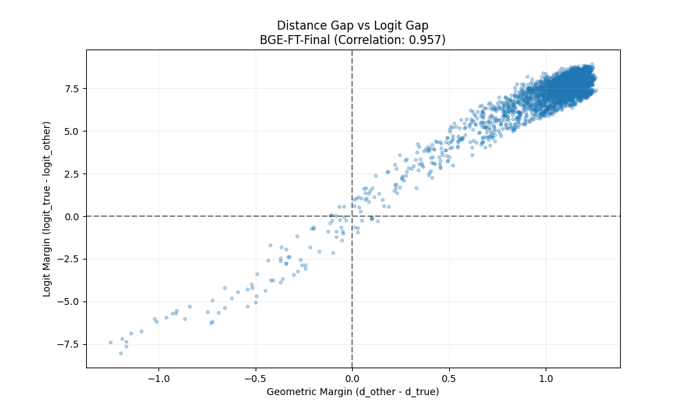
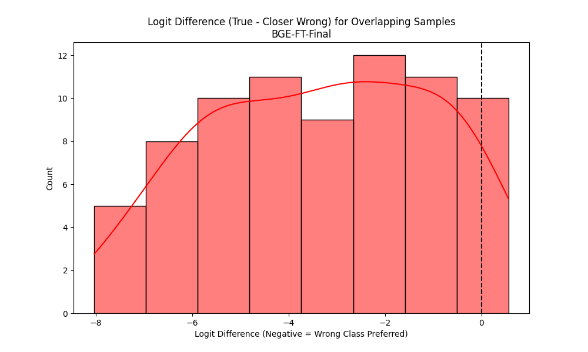
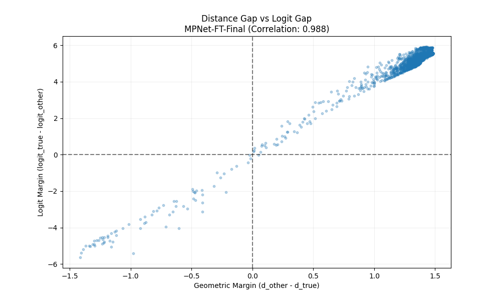
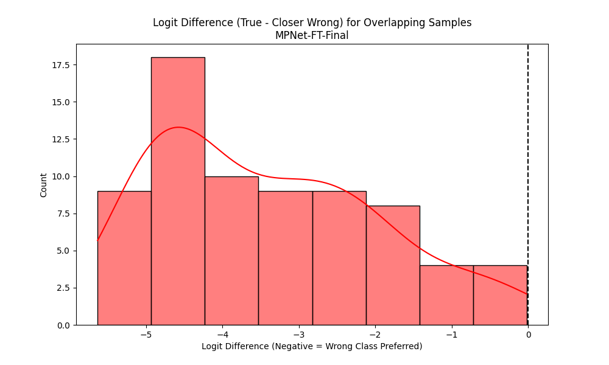

This phase investigates if the model's output probabilities (logits) follow the same Euclidean logic as the embedding space. We specifically look at samples that are geometrically closer to a wrong class centroid.
| Model Variant | Overlap Count | Overlap % | Logit Agreement Rate* | Dist-Logit Correlation |
|---|---|---|---|---|
| BGE-FT-Final | 76 | 1.88% | 93.42% | 0.957 |
| MPNet-FT-Final | 71 | 1.76% | 100.00% | 0.988 |
*Percentage of overlapping samples where the logit of the closer (wrong) class is actually higher than the logit of the true class.
Examples where the sample is geometrically closer to an incorrect centroid. Note how the logits (L_Wrong) typically follow the geometric bias.
| Index | True Label | Closer (Wrong) | D_True | D_Wrong | L_True | L_Wrong | Sentence |
|---|---|---|---|---|---|---|---|
| 121 | surprise | happiness | 1.0203 | 0.6610 | 1.6833 | 5.3584 | Today has been full of pleasant surprises so far. |
| 126 | anger | sadness | 1.3114 | 0.3490 | 0.4563 | 6.3772 | I'm having a bit of a rough morning already |
| 300 | sadness | fear | 1.2843 | 0.7439 | 0.7422 | 5.0032 | Today was super stressful at work, need calm |
| 347 | sadness | fear | 1.2996 | 0.2777 | 0.2797 | 6.2895 | I'm worried about my exam tomorrow. |
| 370 | anger | sadness | 1.3423 | 0.2510 | 0.0324 | 6.7673 | This morning was pretty rough for me somehow. |
| 463 | love | happiness | 1.0553 | 0.6357 | 1.8402 | 5.5948 | Being around him feels incredibly comfortable and nice. |
| 504 | sadness | anger | 1.0514 | 0.7215 | 2.8282 | 5.1930 | Today has been a really long day already. |
| 556 | anger | sadness | 1.4434 | 0.2737 | -0.8311 | 6.7829 | Today was pretty disappointing, to be honest. |
| 581 | love | sadness | 0.9563 | 0.8906 | 3.5192 | 3.6991 | My heart is full just thinking about tonight |
| 653 | fear | surprise | 0.9045 | 0.8604 | 3.8619 | 3.8995 | I'm literally freaking out right now what's happening? |
| 817 | fear | anger | 1.0532 | 0.6299 | 2.8136 | 4.5227 | My boss seems angry, it's making me anxious |
| 887 | surprise | fear | 1.3834 | 0.1863 | -1.5051 | 6.5295 | I'm more nervous than expected about tomorrow. |
| 907 | surprise | anger | 1.1541 | 0.7830 | 1.7679 | 4.3987 | This traffic jam is worse than I expected it'd be. |
| 1289 | happiness | surprise | 1.0591 | 0.7723 | 2.7042 | 3.8788 | Noticed a little spring in my coworker's step today. |
| 1609 | fear | anger | 1.0646 | 0.6306 | 2.4625 | 5.0413 | This test is really stressing me out right now. |
| Index | True Label | Closer (Wrong) | D_True | D_Wrong | L_True | L_Wrong | Sentence |
|---|---|---|---|---|---|---|---|
| 126 | anger | sadness | 1.3730 | 0.1373 | -0.1013 | 4.4393 | I'm having a bit of a rough morning already |
| 347 | sadness | fear | 1.4208 | 0.0800 | -0.3924 | 4.5963 | I'm worried about my exam tomorrow. |
| 370 | anger | sadness | 1.3996 | 0.1191 | -0.2608 | 4.4444 | This morning was pretty rough for me somehow. |
| 463 | love | happiness | 1.2345 | 0.4674 | 1.2698 | 4.1863 | Being around him feels incredibly comfortable and nice. |
| 504 | sadness | anger | 1.2990 | 0.2332 | 0.4799 | 4.5310 | Today has been a really long day already. |
| 553 | sadness | anger | 1.4413 | 0.0724 | -0.3396 | 4.6735 | I'm so frustrated with this situation, it's not fair. |
| 556 | anger | sadness | 1.3995 | 0.1360 | -0.2562 | 4.4301 | Today was pretty disappointing, to be honest. |
| 800 | love | happiness | 1.2446 | 0.4593 | 1.1573 | 4.2401 | . Feeling really appreciative of my loved ones today. |
| 887 | surprise | fear | 1.4871 | 0.0732 | -1.0321 | 4.6015 | I'm more nervous than expected about tomorrow. |
| 1123 | surprise | fear | 0.9836 | 0.8112 | 2.2765 | 3.0792 | I'm seriously considering taking a spontaneous road trip tomorrow |
| 1203 | love | happiness | 1.2279 | 0.5819 | 1.3645 | 3.9111 | Just had the best date night ever tonight though |
| 1450 | surprise | fear | 1.2983 | 0.3758 | 0.3103 | 4.3445 | I'm seriously freaking out about this situation. |
| 1709 | happiness | love | 1.4141 | 0.1933 | -0.0115 | 4.8218 | My world is so much brighter with you nearby. |
| 1796 | fear | sadness | 1.3080 | 0.6239 | 0.2747 | 3.5768 | I don't think my heart can take this anymore! |
| 1835 | happiness | love | 1.3926 | 0.2187 | 0.0889 | 4.8044 | Being around loved ones makes my heart extremely full. |

Correlating geometric margin with logit margin.

Distribution of (Logit_True - Logit_Wrong) for overlapping samples.

Correlating geometric margin with logit margin.

Distribution of (Logit_True - Logit_Wrong) for overlapping samples.